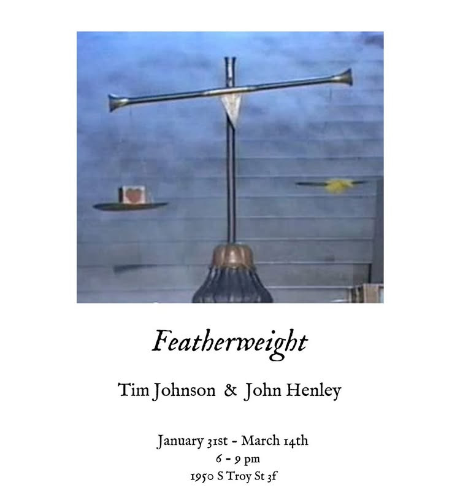

Tim Johnson & John Henley: Featherweight
is pleased to present: 𝒇̲̅𝒆̲̅𝒂̲̅𝒕̲̅𝒉̲̅𝒆̲̅𝒓̲̅𝒘̲̅𝒆̲̅𝒊̲̅𝒈̲̅𝒉̲̅𝒕̲̅
Saturday 1/31/26 6-9pm
Featuring:
Tim Johnson • John Henley
Featherweight considers weight as something other than mass. A residue. A record. A pressure that accumulates through use, memory, and care. Borrowing loosely from funerary ritual, the exhibition treats attachment as an active condition—something rehearsed, wrapped, and tested.
Here, preservation is not neutral. Protection compresses. What remains is calibrated rather than resolved. 𝑺̲̅𝒆̲̅𝒆̲̅ 𝒚̲̅𝒐̲̅𝒖̲̅ 𝑺̲̅𝒂̲̅𝒕̲̅𝒖̲̅𝒓̲̅𝒅̲̅𝒂̲̅𝒚̲̅